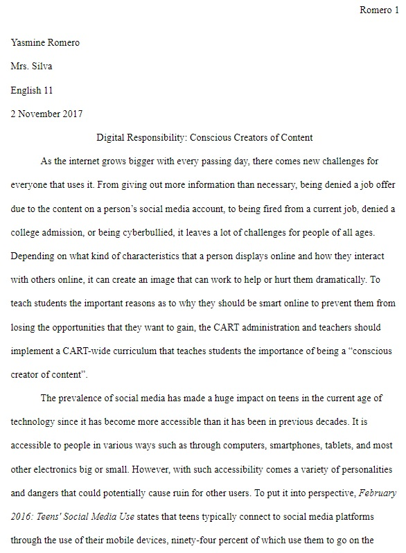
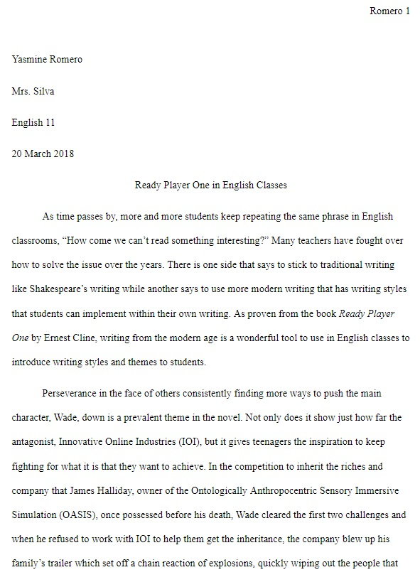

Writing
Writing Sample 1: "Digital Responsibility: Conscious Creators of Content"
I wrote this piece in my English class at the Center for Advanced Research and Technology (CART), covering how students at CART could benefit from a curriculum covering how to be conscious of the content they post online. This excerpt is a portion of a longer research essay and was written in academic prose and MLA format. I chose this sample since this shows my research abilities and how I can pull together information for an argumentative essay and use statistics to help further explain my points. Read More...
Writing Sample 2: "Ready Player One in English Classes"
I also wrote this piece at CART, which was an argumentative essay on whether or not the book Ready Player One by Ernest Cline should be used in English classes, and I argued for the use of the book. This excerpt is a part of a longer essay and was written using academic prose and MLA format. I selected this sample since it shows how I can place myself in the shoes of my peers and see how the book could be beneficial to them while also having the book be a good use of time for teachers. Read More...